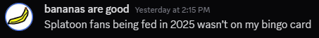

Howdy Everyone! Fery here, yet again, for one single topic this time! (Although I might talk about more stuff), so let's start!
Yup, after nearly 3 months (I started on March 24th), my Internships are pretty much almost done! Today's my last day and I'm just wrapping things up to finish before the end of my shift!
I'm still not gonna say the company's name, however, I will say I'll definitively miss them, everyone there has been so sweet, and nice, and to be honest, I really hope I can end up working here full or part time along with my studies!
It just feels so bad leaving this place after such short time, I'll definitively miss it a lot.
Yup, yesterday I was literally just buying bread on the gluten-free bakery I usually go to, and the second I got on the tram, suddenly...
Splatoon NA posted a trailer on Twitter, which... WHAT, we LITERALLY got 3rd kits announcements, URCHIN FUCKING UNDERPASS, AND A SPIN-OFF GAME ANNOUNCED???
Also, the Grand Festival Venue was mentioned as an improvement from the Switch 2 updates, which makes me think... Are we gonna have another fest there? :3
Regarless, 15 of the 30 kits have been announced, and, oh my god, they're so hit or miss :sob:, however they're still 3RD FUCKING KITS. LIKE WHAT
As my friend Banana said :
And I think so myself because WOW that was NOT EXPECTED
now I need a switch 2 is anyone willing to donate to this cause /hj (i really do want one tho lmfao)
As you may now, right now all entries are just kinda... spilled in a single folder, which makes navigation a pain, so...
I've refactorized it! ^^ Now entries are split on years! That way I can just check entries from This year or last year, instead of all at once!
This WILL break older links, but it'll make my life easier, so... yup.
As you guys may know, I've been maintaining this blog for a good time now! It's been about a year and a half-ish (First post was on Feb 15th 2024), and it's been quite a wild year, I mean, so much has happened in my life, online and not, and honestly... I really want to keep it going.
I probably won't update much after summer, since school will pick up, and if I get a job, even summer updates might not be frequent, however, I do want to go on with the site itself!
So yup, count on me to continue updating this place for as long as I can!
Well, that's it for now!
See you next time! - Fery